Cosmic Noon Galaxies with PFS
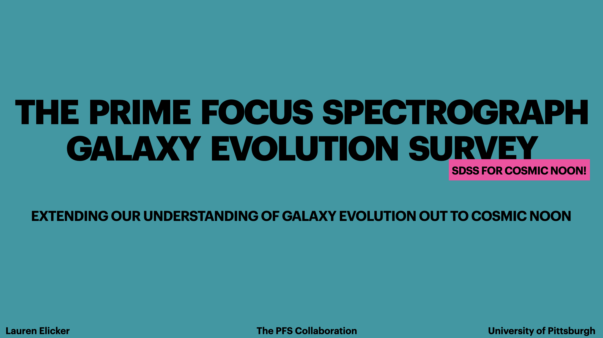
What is PSF?
PFS refers to two things. 1) The Prime Focus Spectrograph, a new instrument on the Subaru Telescope in Hawaii. 2) The Prime Focus Spectrograph Strategic Science Program, a 360-night survey using the PSF instrument.
The Prime Focus Spectrograph
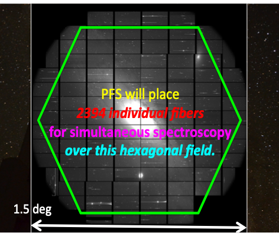
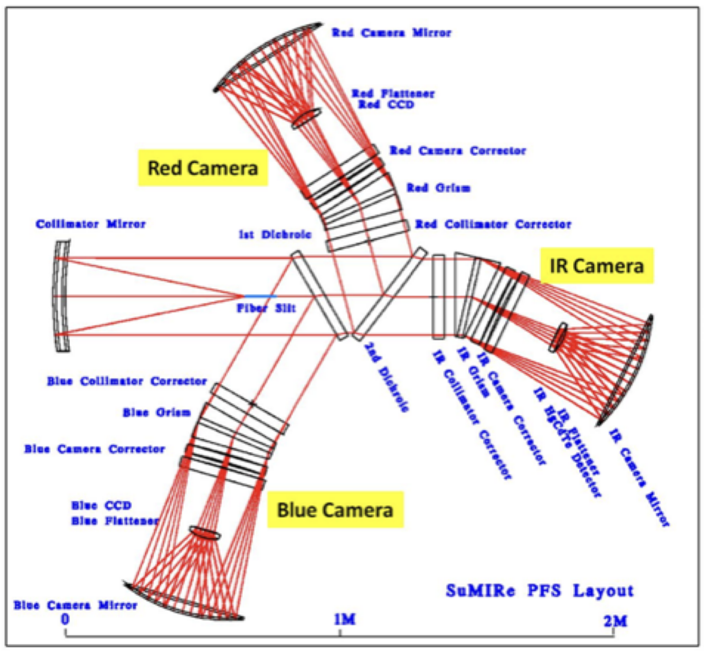
The Prime Focus Spectrograph is a ground-based instrument with a field of view of ~1.5 degrees. It can take ~2400 spectra at once and covers blue, red, and near-infrared wavelengths (0.38 - 1.26 microns).
The PFS - Strategic Science Program
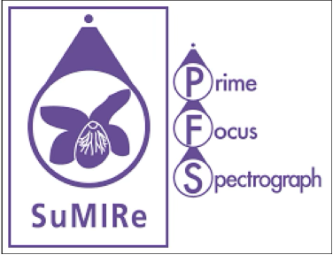
The PFS-SSP is a 360-night survey consisting of an international collaboration of scientists. We started collecting in Spring of 2025. The SSP is broken into 3 working groups: Cosmology, Galactic Archeology, and Galaxy Evolution. I am part of the the Galaxy Evolution (GE) working group; our goal is to spectroscopically study the evolution of massive galaxies over cosmic time.
PFS-Galaxy Evolution at Cosmic Noon
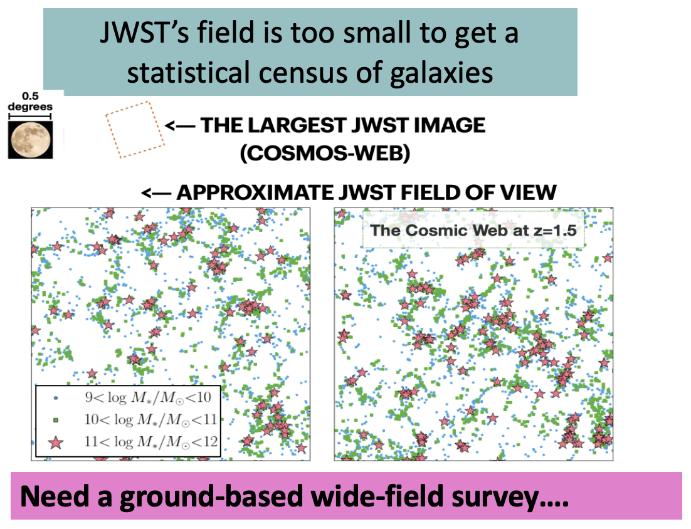
JWST is an amazing space-based instrument that has captured beautiful images of galaxies in the distant universe. It is extremely useful for getting detailed observations of a few select galaxies, however, it cannot observe enough galaxies to cover their true distribution of properties. This motivates the need for a ground-based wide-field survey like PFS!
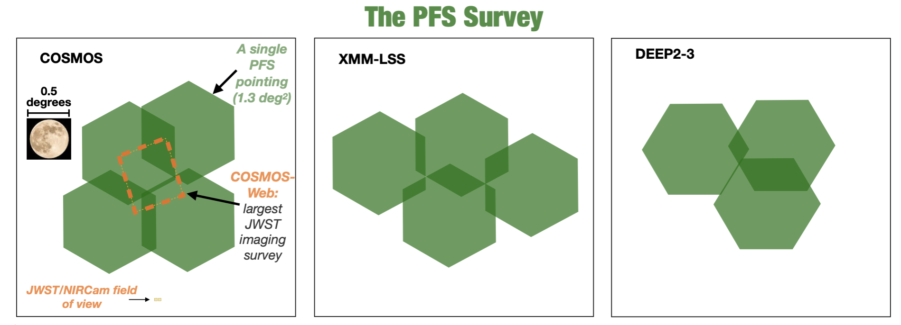
PFS can observe ~2400 objects at a time over a relatively large patch of the sky, making it the ideal spectroscopic instrument for large survey science. Over the next 5 years, the PFS-SSP GE survey will densely sample 300,000 Cosmic Noon galaxies across the COSMOS, XMM-LSS, and DEEP2-3 fields. This representative sample will use magnitude and photometric redshift selection cuts. This unparalleled survey will generate a statistical census of Cosmic Noon galaxies by tackleing cosmic variance (the clustering of galaxies), finding rare sources, and testing the impact of environment.
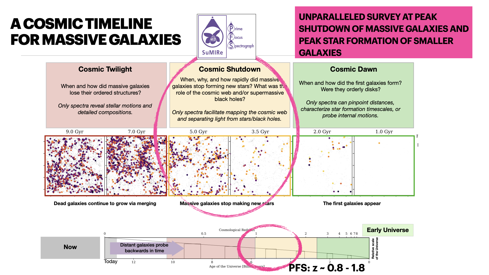
At this point you might be wondering what "Cosmic Noon" means. Cosmic Noon is the time period where the Universe is experiencing peak star formation and black hole growth, while the most massive galaxies are turning off their star formation. It's a unique time period that is key for understanding how / why galaxies turn off their star formation. This time period was roughly 7.8 - 11.5 billion years ago. For reference, the current age of the Universe is 13.8 billion years. If you want to think about this in terms of redshift (z), Cosmic Noon corresponds to z = 1 - 3. The redshift of a galaxy refers to the "stretching" of a galaxy's light because of the expanding acceleration of the Universe. So galaxies that are farther away from us have a larger redshift. Because light travels at a finite speed, the light we see from far away galaxies is older than the light we see from nearby galaxies. So when we look at galaxies that are farther away and have a larger redshift, we're actually seeing that galaxy as it was a long time ago. Our survey will look at galaxies at z = 0.8 - 1.8, so the lower redshift (more recent) end of Cosmic Noon. A wide-field survey targeting this epoch of galaxy evolution has never been done before.
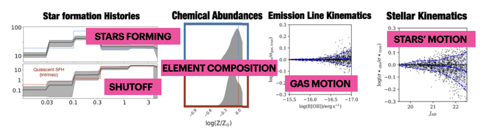
With PFS spectra, we'll be able to measure star formation histories, stellar masses, chemical abundances, stellar and gas kinematics, and black hole properties. We'll release value-added catalogs with these derived properties.
Spectra from PFS-GE Cosmic Noon Observations
Here are some early reduction 2-hour spectra from our first years of observing!
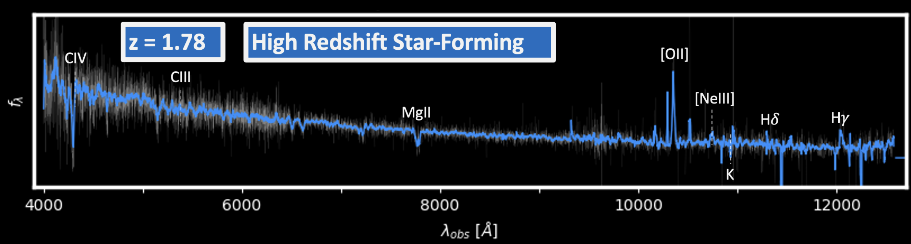
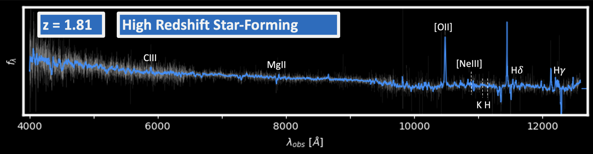
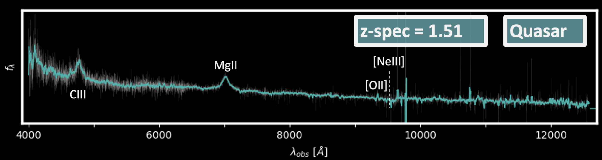
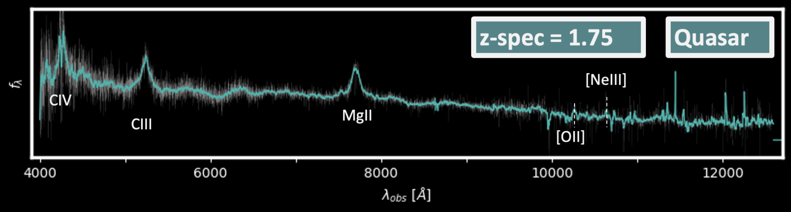
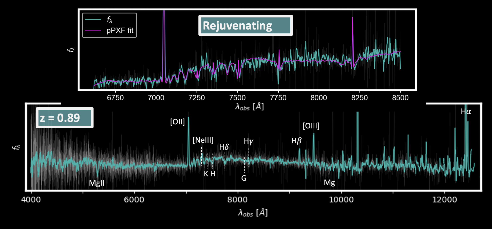
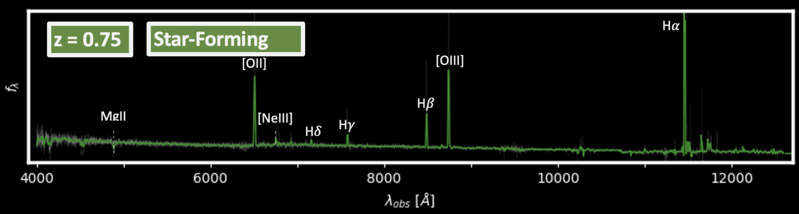
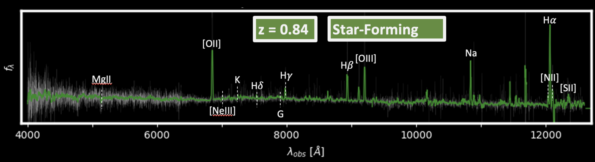
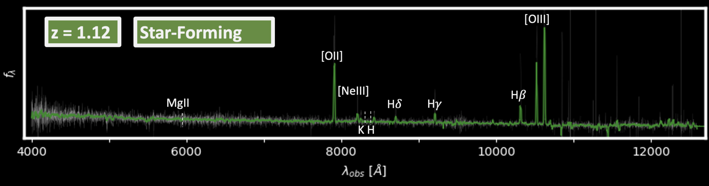
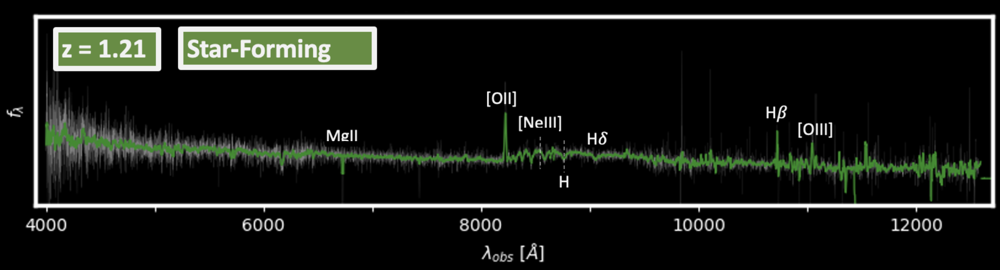